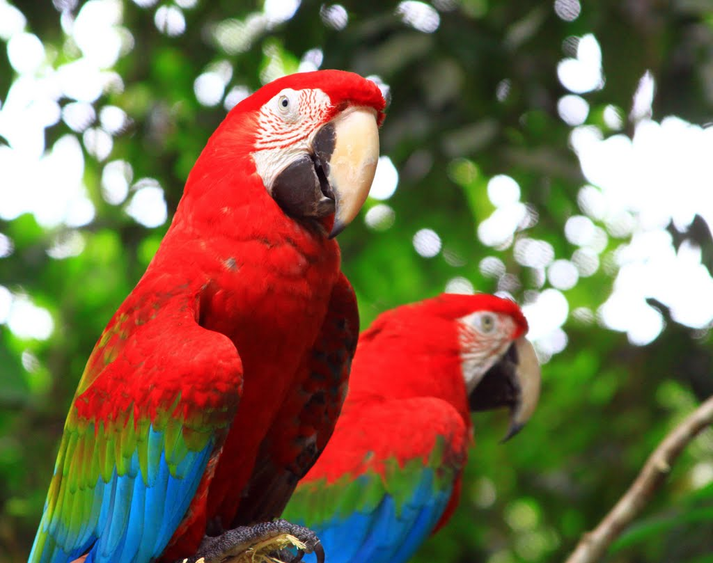
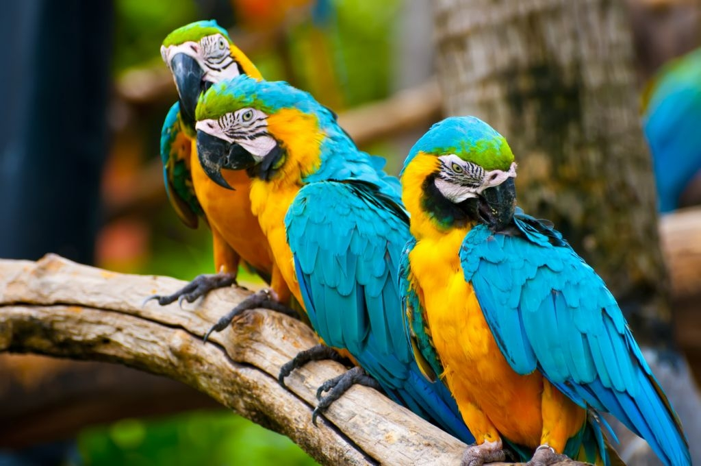

Попугаи

Это многочисленная группа птиц, насчитывающая более 300 видов. Попугаи настолько своеобразны и хорошо обособлены, что их выделяют в отдельный отряд Попугаеобразных.
Этих птиц нельзя спутать ни с какими другими. Главной их отличительной внешней особенностью является клюв. Он у попугаев одновременно большой, но… короткий, потому что сильно загнут. Верхняя часть клюва (надклювье) особенно массивна, нижняя часть (подклювье) намного меньше и имеет форму ковша. Часто подклювье имеет выемку по краю.
Такое строение клюва позволяет попугаям удерживать крупные плоды и раскалывать твердые орехи.
Вдобавок челюсти у попугаев немного двигаются в горизонтальной плоскости, это делает их клюв универсальным инструментом-манипулятором. Над клювом располагается восковица — утолщение с ноздрями. Язык очень толстый, мясистый, у одних видов он напоминает шарик, у других может быть расщеплен на конце и напоминает щетку. Голова у попугаев округлой формы, у многих видов на голове имеются украшения в виде подвижного хохолка различной формы. Шея короткая, крылья средней длины, заостренные. Лапы этих птиц тоже весьма необычны, на них всего четыре пальца, причем два их них направлены вперед, а два назад, к тому же они поворачиваются в суставах в разных плоскостях. Такое строение лап позволяет обхватывать ветки, держаться за вертикальные поверхности и удерживать всевозможные предметы.
Хвост у этих птиц бывает двух типов: либо короткий с тупым срезом, либо длинный и заостренный.
Для попугаев характерна очень яркая и многоцветная окраска. Даже те немногие виды, что окрашены однотонно, имеют небольшие ярко расцвеченные участки оперения. Половой диморфизм у попугаев слабо выражен — самцы и самки окрашены одинаково. Особое исключение составляет благородный попугай, у которого разница в окраске полов настолько велика, что раньше самцов и самок этого вида принимали за разных птиц. Размер разных видов варьирует в очень широких пределах: самый мелкий вид (волнистый попугай) размером чуть больше воробья, а самый крупный (красный ара) достигает в длину 1 м!
Населяют попугаи Австралию, Африку, Южную и Центральную Америку и Южную Азию. Многочисленные виды попугаев приспособились жить в различных ландшафтах — во влажных тропических лесах, сухих эвкалиптовых рощах, саваннах и даже полупустынях. Хоть эти птицы и южные, но некоторые виды хорошо переносят понижение температуры.
Все попугаи стайные птицы, но у разных видов стаи могут отличаться размером и постоянством. Так, крупные виды гнездятся отдельными парами, а в стаи собираются только во внегнездовой период, другие виды формируют постоянные стаи и колониальные гнездовья.
Гнезда попугаев всегда располагаются на деревьях или растениях, их заменяющих (например, огромных кактусах). Единственный вид попугаев, который гнездится на земле — совиный попугай. Связано это с тем, что совиный попугай — единственный нелетающий вид в отряде, селятся эти птицы в норах.
Сами гнезда могут выглядеть по-разному. Большинство попугаев предпочитает гнездиться в дуплах, благо мощный клюв помогает им обустроить такое жилище, но некоторые виды могут устраивать гнезда из веточек. Например, попугаи калита устраивают коллективные гнезда, диаметром до 3 м! Такое гнездо состоит из отдельных гнездовых камер, своеобразных квартир. Попугаи оседлые птицы. Они годами живут на одном и том же участке леса и только виды, населяющие засушливые области Австралии, могут совершать короткие кочевки в поисках корма и воды. По этой причине попугаи хоть и способны к быстрому полету, но не выносливы.
Из-за ярко выраженного социального характера жизни у попугаев развился высокий интеллект. Многочисленными исследованиями установлено, что попугаи не только быстро обучаются и запоминают команды, но и обладают аналитическим мышлением. По уровню логики попугаи делят пальму первенства среди птиц вместе с воронами, но по способности к общению намного превосходят не только птиц, но и многих млекопитающих.
Для контактов друг с другом они используют богатый язык звуков и телодвижений. Голос у попугаев громкий, резкий, в их стае всегда царит шум. Характерно, что попугаи используют для коммуникации не только собственные звуки, но и заимствованные из окружающей среды. Способность к звукоподражанию у разных видов различна: некоторые попугаи редко включают в свою речь посторонние звуки (какаду, ара), другие пользуются ими постоянно (жако). Однако главной особенностью попугаев является то, что они не просто повторяют услышанные звуки (так делают, например, многие певчие птицы), но наделяют их смыслом. То есть попугаи используют определенные звуки для обозначения определенных ситуаций и предметов. Другими словами эти птицы практикуют настоящую речь! Например, воспитанный в неволе попугай жако не только выучил названия более чем сотни предметов, но и научился выражать просьбы типа «хочу — не хочу это», умел производить сравнения типа «этот предмет больше того» и даже выражал отсутствие предмета. То есть птица овладела абстрактными понятиями, а ведь раньше считалось, что абстрактное мышление присуще только человеку! На подобное обучение у жако ушло 15 лет.
Помимо звуков попугаи выражают свое настроение поворотами головы, распусканием хохолка и тому подобными действиями. Интересно, что язык движений лучше развит у тех видов, которые плохо разговаривают (рекордсменами ужимок являются какаду).
Питаются попугаи разнообразной растительной пищей. Одни виды специализируются на питании семенами и зернами злаков (неразлучники), другие предпочитают крупные плоды и орехи (какаду). Есть и очень узкоспециализированные виды (лори), которые питаются исключительно пыльцой и нектаром цветов. Крупные виды (ара) могут включать в свой рацион мелких животных, а попугай кеа из Новой Зеландии активно хищничает. Причем попугаи кеа перешли на питание мясом не без участия человека. Дело в том, что раньше эти попугаи питались растительной пищей, но с приходом в Новую Зеландию людей были вытеснены из лесов. На месте древесных зарослей раскинулись бескрайние пастбища для выпаса овец. Попугаи вынуждены были приспособиться и стали поедать мясо с трупов недавно павших животных. Благодаря коллективной поддержке стаи попугаев научились… убивать овец! Конечно птицам не под силу одолеть здоровое животное, но слабую и больную овцу стая попугаев может и добить.
Попугаи — моногамные птицы, они образуют постоянные пары и сохраняют верность друг другу всю жизнь (недаром несколько видов называют неразлучниками). Правда, у мелких видов, живущих большими стаями, пары могут распадаться под влиянием неблагоприятных факторов (гибель одного из партнеров, неудавшееся гнездование, непропорциональное соотношение полов).
Попугаям не свойственно бурное брачное поведение, их пары образуются в результате длительного ухаживания, причем для создания пары недостаточно простого контакта разнополых птиц. Например, в неволе многие крупные попугаи при совместном содержании не образуют пар, очевидно при выборе партнера птицы руководствуются какими-то личными симпатиями. Брачное поведение выражается в совместном щебетании, перебирании друг другу перьев на голове и кормлении самки самцом. Размножаются крупные виды раз в году, у мелких может быть 2-4 кладки за сезон. В кладке бывает 3-5 яиц. Птенцы вылупляются голыми и беспомощными. У попугаев не развит птенцовый пух, подросшие птенцы сразу начинают покрываться перьями. Все виды попугаев отличаются большой продолжительностью жизни. Даже самые мелкие виды могут жить в неволе по 10-15 лет, а возраст крупных попугаев может достигать 50-60 лет (для сравнения такая же продолжительность жизни у слонов и китов).
Яйца и новорожденные птенцы неразлучника.
В природе попугаи становятся жертвами хищных птиц, именно для защиты от пернатых врагов они собираются в большие стаи. Иногда их гнезда разоряют змеи. В целом хищные звери не представляют для них большой опасности, так как мощный клюв попугаев представляет грозное оружие, достаточно сказать, что одним укусом крупный ара может перекусить мизинец человеку. В то же время численность большинства видов сокращается под влиянием антропогенных факторов — уничтожения лесов, браконьерского вылова. Особенно сильно сокращается численность эндемичных, узкоареальных видов (совиный попугай, амазоны карибского бассейна).
Гиацинтовый ара в природе находится на грани уничтожения.
С другой стороны численность некоторых мелких африканских и австралийских видов сильно возросла в последние годы. Связано это с успешным земледелием и богатыми урожаями зерновых, которые привлекают многотысячные стаи попугаев. В неволе они хорошо приживаются, но размножаются далеко не всегда. Своей красотой и понятливостью попугаи привлекают любителей животных, но надо понимать, что эти птицы требуют ответственного отношения. Например, у попугаев бывают своеобразные болезни психической природы (еще одно доказательство тонкого интеллекта). При длительном содержании в неблагоприятных условиях (неправильное кормление человеческой пищей, одиночество, теснота, затяжной стресс) попугаи начинают выщипывать у себя перья. В тяжелых случаях птица может оголить себя полностью, лечится самоощипывание очень тяжело, иногда для полного излечения нужно затратить годы. Некоторые виды попугаев в неволе нетребовательны (волнистый попугай, неразлучники, корелла), селекцией выведено много новых цветовых вариаций этих видов, неизвестных в природе.
Вверх